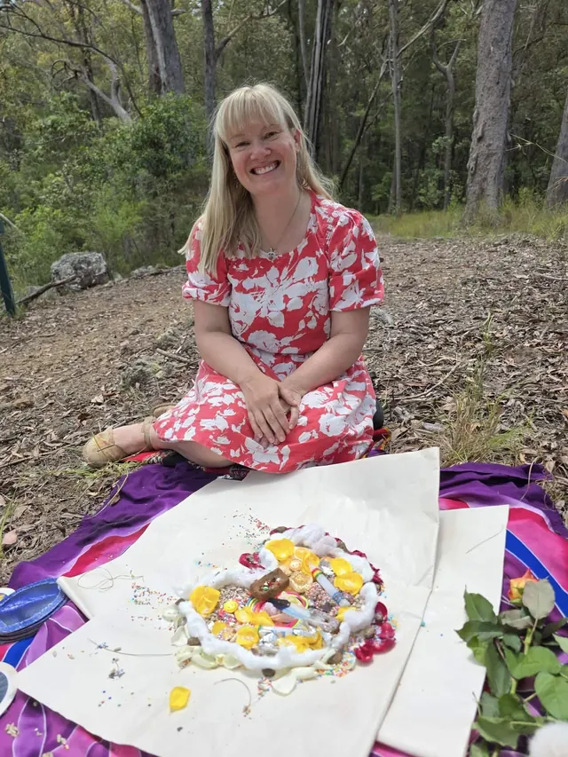

HEARTARA · KILLARNEY, QUEENSLAND
Despacho
& sacred ceremony.
Gratitude, intention and a connection with the Earth, held according to the training I have received.
GRATITUDE & INTENTION
Despacho ceremony.

A despacho is a ceremonial offering associated with Andean traditions, bringing together gratitude, intention and connection with the Earth. The particular form is held according to the training I have received.
My path includes receiving the Munay Karpay initiation in December 2025, as well as training to offer despacho ceremony. If you feel drawn to ceremony, please get in touch to discuss the intention and what an offering may involve.
Ask about a ceremony ↗Making space together
What is sacred space?
Sacred space is an intentional pause from everyday life: a space to become present, listen inwardly and connect with what feels sacred to you.
Can sacred fire be included?
Where conditions safely allow, fire ceremony can offer a focus for gratitude, reflection, release and new intentions. We agree the intention, suitability and practical arrangements together.